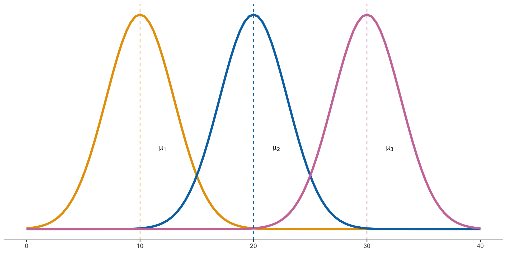
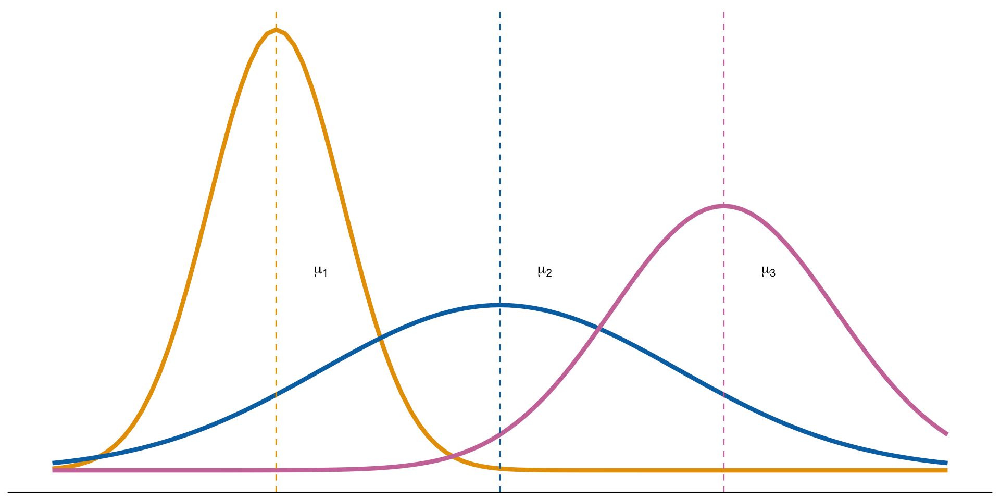
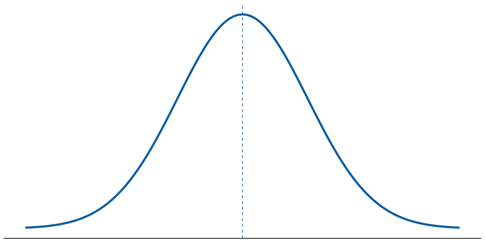
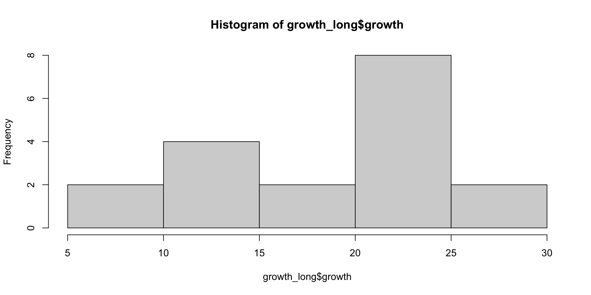
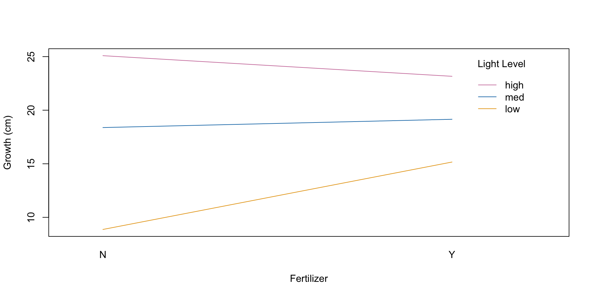

Analysis of Variance (ANOVA) compares the means of some dependent variable across three or more groups of an independent variable to determine if the group means are statistically different.
When would I use ANOVA?
You might use ANOVA when…
You have a categorical independent variable with three or more factors (levels), and
A continuous, dependent variable you are interested in measuring.
When would I use ANOVA?
Examples:
Comparing three diets, based on how much weight a person lost.
Determining if there is a difference in how 10 different medications affect blood pressure.
Analyzing the effects of three light levels, fertilizer or not, and their interaction on a plant’s growth.
Example
Let’s look at an example for how we would run an ANOVA in R. Say we have the following scenario:
We want to look at how three different light levels (low, medium, high) affect the growth of a plant (in centimeters).
In a greenhouse, there are 18 grow lights; six with each light level
18 separate plants are randomly assigned to each grow light
All other conditions are constant across all plants, and after 12 weeks, total growth is measured
Note: This data is in wide format, but we’ll need it in long format in order to analyze it.
Quick Tip! Reformatting Data
The pivot_longer() function from the tidyr package easily converts data from wide format to long format.
Install the package (if you haven’t already) by pasting the following code into your console.
install.packages("tidyr")
Quick Tip! Reformatting Data
Next, use pivot_longer() to restructure the data.
# Putting data in long formatlibrary(tidyr)growth_long <-pivot_longer(data = growth,cols ="low":"high",names_to ="light_level",values_to ="growth")head(growth_long)
# A tibble: 6 × 3
plant light_level growth
<chr> <chr> <dbl>
1 plant 1 low 18.5
2 plant 1 med 19.2
3 plant 1 high 19.2
4 plant 2 low 5.99
5 plant 2 med 19.1
6 plant 2 high 24.3
ANOVA Assumptions
To use ANOVA, certain assumptions must be met, or results will not be reliable.
Data is normally distributed
Observations are independent of each other
Variances for each group are approximately equal
ANOVA Assumptions

Here, each group is normally distributed with different means and equal variance.
ANOVA Assumptions

Here, groups are normally distributed with different means, but variances are unequal.
Checking for Normality
In a general sense, we want to check that our data approximately follows the normal distribution.

Checking for Normality
Let’s see if our data looks normal by making a histogram.
hist(growth_long$growth)

Our data looks fairly normal, so we can proceed with an ANOVA. We will assume that the variances are approximately equal.
How does ANOVA work?
ANOVA breaks down total data set variance into two components:
Within-group variance: How much do individual units within a group vary from each other?
Between-group variance: How much do the different groups vary from each other?
If between-group variance is larger, this often suggests that the group means are different.
ANOVA Hypotheses
An ANOVA tests the following hypotheses:
\(H_0:\) All group means are equal.
\(H_A:\) At least one group mean is different.
We test these hypotheses with an F-test.
If we get a p-value < 0.05, then we have evidence in favor of \(H_A\)
ANOVA In R
# Run an ANOVAmodel <-aov(growth ~ light_level, data = growth_long)summary(model)
Df Sum Sq Mean Sq F value Pr(>F)
light_level 2 454.6 227.29 16.68 0.000154 ***
Residuals 15 204.3 13.62
---
Signif. codes: 0 '***' 0.001 '**' 0.01 '*' 0.05 '.' 0.1 ' ' 1
Interpreting the Results
Analysis of Variance Table
Response: growth
Df Sum Sq Mean Sq F value Pr(>F)
light_level 2 454.58 227.292 16.685 0.0001536 ***
Residuals 15 204.34 13.622
---
Signif. codes: 0 '***' 0.001 '**' 0.01 '*' 0.05 '.' 0.1 ' ' 1
Pr(>F): This is the p-value from the F-test for light_level
Here, our p-value is extremely small, so we can conclude that at least one of the groups has a different mean.
The question remains: which groups are different?
Tukey’s HSD Test
Tukey’s honestly significant difference (HSD) test allows us to see which groups are significantly different from each other
# A tibble: 6 × 4
plant fertilizer light_level growth
<int> <chr> <chr> <dbl>
1 1 Y low 18.5
2 1 Y med 19.2
3 1 Y high 19.2
4 2 Y low 5.99
5 2 Y med 19.1
6 2 Y high 24.3
Two-Way ANOVA in R
# Run a two-way ANOVAmodel2 <-aov(growth ~ light_level*fertilizer, data = growth_long2)summary(model2)
light_level:fertilizer gives the analysis for the interaction.
The p-value for the interaction is 0.915, indicating there is no evidence of an interaction between fertilizer and light level.
Caution in the face of interaction!
If interaction is determined statistically significant via an ANOVA, then generally we cannot make any assumptions about the individual effects
Even if your individual effects show as significant, heed those results with caution if the interaction is significant
A useful tool is an interaction plot
This helps us visualize how two effects (variables) are related.
Interaction Plot: No Interaction
Interaction Plot: Interaction is Present
Both plots indicate interaction is present.
Creating an Interaction Plot
# Interaction plot for light level and fertilizerinteraction.plot(x.factor = growth_long2$fertilizer,trace.factor = growth_long2$light_level, response = growth_long2$growth, fun = mean,xlab ="Fertilizer", ylab ="Growth (cm)", trace.label ="Light Level",col =c("#E69F00","#0072B2","#CC79A7"), lty =1)
Creating an Interaction Plot

This interaction plot shows little to no interaction between fertilizer and light level, which was confirmed by the ANOVA.
Tukey’s HSD Test for Two-Way ANOVA
Tukey’s HSD test can also be used with a two-way ANOVA.
# Tukey's HSD test for a two-way ANOVATukeyHSD(model2, conf.level =0.95)
I didn’t include the output here, because it is long!
Tukey’s HSD test can give great further insight, especially when your interaction is significant
Other ANOVA Notes…
If you ever encounter a scenario where residual degrees of freedom (df) are equal to or smaller than any main effect or interaction, ANOVA results won’t be reliable
If you are ever worried that variances between groups aren’t equal, the leveneTest() function can test for equality of variances
If you have a scenario where you have an unbalanced experiment or missing data points, Type III sums of squares should be used in the ANOVA.
The aov() function we used uses Type I sums of squares.
The library cars has an Anova() function with Type III capabilities.